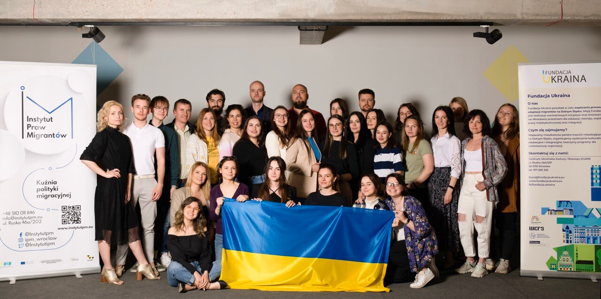
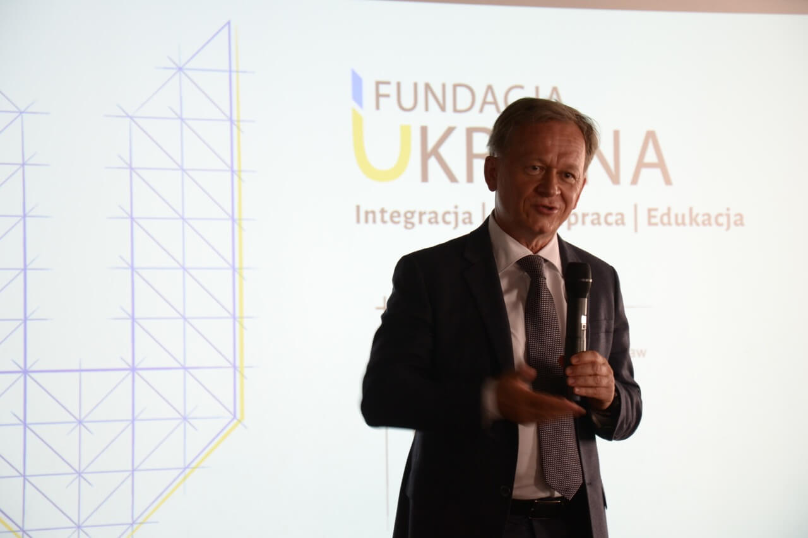

Pierwszy projekt Fundacja zrealizowała w 2014 roku, natomiast obecnie na swoim koncie ma już ponad 60 zrealizowanych inicjatyw.
O nas
Fundacja Ukraina__
Jesteśmy organizacją pozarządową z dziesięcioletnim doświadczeniem, wspierającą migrantów i uchodźców na terenie Dolnego Śląska. Codziennie tworzymy przestrzeń do edukacji, rozwoju oraz integracji społecznej i kulturowej. Dajemy migrantom i uchodźcom wsparcie, wiedzę i możliwości. W szczególności wspieramy procesy integracji, adaptacji oraz pomagamy obcokrajowcom szybciej odnaleźć się w polskim środowisku.
Naszą misją
Naszą misją jest tworzenie projektów integrujących migrantów, rozwijających społeczeństwo, zmieniających świat.
Nasza wizja to dążenie do świata świadomych, otwartych i spełnionych ludzi.
W celu osiągnięcia największej efektywności pracy, kierujemy się następującymi wartościami:
- misyjność;
- priorytet na jakość i odpowiedzialność;
- efektywność;
- szacunek dla człowieka i zespołu;
- innowacyjne podejście do zarządzania NGO w Polsce.
Poznaj naszą historię
Fundacja Ukraina powstała 23 kwietnia 2013 roku z inicjatywy Konsula Honorowego Ukrainy, Grzegorza Dzika, w celu wspierania procesu adaptacji, integracji oraz rozwoju osobistego i zawodowego migrantów. Na początku swojej działalności organizacja pomagała głównie osobom pochodzenia ukraińskiego, z kolei w 2016 roku otworzyła się na pozostałych cudzoziemców.
W kwietniu 2016 roku miasto Wrocław w ramach wsparcia dobrych inicjatyw udostępniło Fundacji Ukraina lokal przy ulicy Ruskiej 46A, który został wyremontowany dzięki wsparciu Konsula Honorowego Ukrainy we Wrocławiu.
W tym miejscu powstało Centrum Ukraińskie Kultury i Rozwoju (CUKR), prowadzone przez Fundację Ukraina. Dnia 18 listopada 2016 roku odbyło się jego uroczyste otwarcie.
CUKR bardzo szybko stał się ośrodkiem kulturalnym i przypadł do gustu mieszkańcom Wrocławia. Organizowane były w nim specjalne pokazy filmowe oraz wieczory poetycko-muzyczne. Obecnie CUKR jest największym i najbardziej rozpoznawalnym projektem Fundacji Ukraina, gdzie odbywa się większość wydarzeń integracyjno-edukacyjnych, kulturalnych i adaptacyjnych, organizowanych w ramach projektów Fundacji Ukraina. W roku 2017 działania CUKRu zostały poszerzone o Punkt Informacyjno-promocyjny dla migrantów InfoCUKR.
W odpowiedzi na coraz większy odsetek migrantów w społeczności lokalnej oraz ich zdiagnozowane potrzeby Fundacja Ukraina powołała do życia Instytut Praw Migrantów z siedzibą przy ul. Ruskiej 46a/202 we Wrocławiu. Uchwałą z dnia 22 grudnia 2020 r. IPM kontynuuje rozwijanie działalności już istniejącego od 2017 r. punktu informacyjnego dla migrantów – InfoCUKR.
Od pierwszych dni pełnoskalowej wojny w Ukrainie Fundacja Ukraina włączyła się w pomaganie i zapoczątkowała akcję SAVE UKRAINE. To zespół działań i mechanizmów mających na celu pomóc Ukrainie, jej mieszkańcom oraz uchodźcom zmuszonym do ucieczki przed wojną na Dolny Śląsk.
Przy wsparciu miasta, partnerów i organizacji pozarządowych udało nam się zorganizować 5 obszarów pomocy:
- koordynacja wolontariuszy,
- wysyłka pomocy humanitarnej,
- zbiórka funduszy przeznaczonych na pomoc humanitarną, medyczną i taktyczną dla Ukrainy,
- wsparcie informacyjne dla uchodźców,
- wyposażenie ośrodków dla uchodźców.
Od kwietnia Fundacja Ukraina przejęła koordynację Punktu Informacyjnego dla uchodźców powstałego na Dworcu Głównym we Wrocławiu. Jesienią 2022 roku ten Punkt oficjalnie został jednostką Fundacji Ukraina pod nazwą Centrum Wsparcia Uchodźców. Po prawie 2 latach funkcjonowania, w dniu 07.06.2024, placówka CWU zawiesiła swoją działalność. Kontynuujemy jednak udzielanie konsultacji i informacji wspólnie z Instytutem Praw Migrantów pod adresem ul. Ruska 46A/201. Serdecznie zapraszamy!
Wyżej wymienione obszary działania dalej z sukcesami realizujemy, przykładając swoją cegiełkę do zmieniania świata na lepsze.